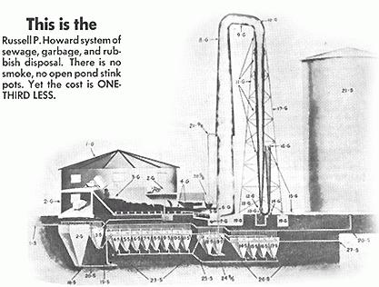

OK, gang. Let's face it. We're all in FAVOR of ecology and saving the planet and all those things . . . but it's a Royal drag, right? I mean, like, it's a lot of fun to tell the TVA to stop strip-mining Kentucky and it's great to demand that General Motors cut production of those smog-belching monsters . . . as long as YOU and I don't have to give up OUR electricity and OUR automobiles, right?
Of course, if we were REALLY sincere in our protests, no protest would be necessary. Because we - YOU and I - just wouldn't buy all that steel unless it could be manufactured "clean" . . . and we wouldn't use the detergents with phosphates . . . and there'd be no market for all those aluminum cans and throw-away wrappers. And - to both save our precious resources and drastically cut those mountains of waste - we'd find ways to recycle everything we use.
Alright. Let's stop and dream a minute: Wouldn't it be beautiful if we could - for once and all - combine the best of both worlds: Live in perfect harmony with nature AND enjoy the fruits of technology. Set up a homestead or a commune or a whole community, say, 'way back in the hills . . . with electric lights and running water . . . but no smog, no polluted streams and no poisoned land.
Got the picture? It's what most of us really want, isn't it? The Pure Life . . . with just a little sin on the side. Makes a pretty castle up there in the air, doesn't it? OK. As Thoreau advised, let's put a foundation under it.
Because it IS possible. Right here and right now. It's possible, that is, according to C.E. Burr and Kieth D. Gilbert and the two following articles lay it all the way down. Gilbert is gonna give us the blueprint after Burr - since we can't act in a vacuum - tells us HOW we can have perfect waste disposal, free power, free fertilizer and a solution to pollution.
How would you like to kill a whole flock of modern problems with one stone: Dispose of all organic waste quickly, easily and naturally; take a giant step toward conserving our precious fresh water; cut air pollution in half; save personal and tax money; and receive a double bonus of rich fertilizer and absolutely free power to boot!
That free power, by the way, can be siphoned off in any form you want: Heat for your home, an industrial furnace, electrical energy, nearly pollution-free automobile fuel . . . you name it. Furthermore - if the bumbling politicos in your area refuse to process waste with the simple system that makes this possible - you can set up your own disposal on a village, commune, family farm or individual basis. We're going to tell you how.
But first, we must understand Nature's basic law of growth and decay and become aware of the willful and wasteful misapplication of this law by most U.S. municipal sewage authorities.
All animal and vegetable matter is part of a gigantic closed system that re-cycles endlessly. Organisms are born and live by recombining the protein (carbon, hydrogen, nitrogen, oxygen and, in some cases, sulfur) of other organisms. When the new life dies, it decays and its protein is - in turn - recombined by other living beings.
During the decay segment of this cycle, there is a biological process we refer to as bacterial action which always produces a stench. Anyone who has lived on a farm knows the smell of the grey vapor that rises from an opened manure pile on a cold day. This stench is hydrogen sulfide.
The hydrogen sulfide is accompanied by another gas, methane, which is odorless. Both gases are combustible and, when oxidized, the hydrogen sulfide becomes sulfur dioxide and trioxide. If water (fog, rain or mist) is then added, sulfuric acid - which destroys everything but plate glass - is the result.
These sulfides are heavier than air and stay close to the ground where they cause maximum damage. This is the stuff that ate the metal dome off the City Hall in St. Louis and dissolved the metal doors on the Port of Oakland. In the Delaware River, it has corroded the hulls of transport ships. It's one of the reasons smog makes you cry. The cancer, emphysema or heart trouble that may kill you could well be traced back to all the sulfuric acid mist you were forced to breath during your short stay on earth.
As if hydrogen sulfide weren't bad enough, the conventional disposal plant - which daily releases huge clouds of the gas - compounds the problem. In an effort to neutralize the hydrogen sulfide stench, great quantities of chlorine ($2,000 worth every month in San Francisco alone) are dumped into the sewers.
This chlorine, of course, kills all the beneficial bacteria and does other interesting things. For example, it combines with the carbon monoxide our automobiles belch into the atmosphere to create the deadly phosgene gas that is used in chemical warfare. More cancer, more emphysema, more heart trouble.
The average municipal refuse plant then completes its criminal negligence by rushing garbage through "treatment" in as little as two hours before the nearly raw sewage is pumped into open ponds, piped into the ocean, flushed down a river or pushed into "landfill". And so, ground and water pollution - with algae growth, marine and land life kills, hepititus and other diseases - are added to the rape of our atmosphere. When confronted by the fact that such "disposal" doesn't work, the authorities in charge almost invariably respond with more of the same . . . on a bigger and a messier scale.
If you want a quick concrete example or two, I can supply more than a full quota from California alone: There is the $50 million sewage plant monstrocity at Los Angeles from which effluence was piped three miles into the Pacific Ocean. Naturally, the refuse washed back in to shore until Manhattan, Hermose and Redondo Beach brought suit for $30 million and Los Angeles had to spend $60 million to extend the discharge pipes another three miles to sea . . . from which it still washes back.
Los Angeles has incinerators too. They cost about a million and a half each and they belch smoke all over the neighborhood. They're one of the reasons Los Angeles has had smog to spare.
Modesto has spent $411 million on antiquated sewage plants and that city still has troubles. Santa Rosa's facility does not remove enough sludge to its digestion tanks to keep the plant operating and the sulfuric acid is eating up pumps and other machinery. Sebastopol's apple packers don't want to clean up their mess so they are syphoning off polluted water for irrigation before the bacteria has time to devour the putrification.
We could go on, but that would be pointless. Especially since waste disposal doesn't have to be done that way. It's not really necessary for us to pay through the nose while our officials pollute the air, the land and the water. There is a much better, more natural and less expensive way to handle sewage: A way that benefits the planet by returning fertility - instead of poison - to the soil; a way that supplies - in an ecologically clean manner - some of the power our cities are so hungry for.
The basic trouble with the conventional sewage plant is that - after little more than a quick grind and dousing with chemicals - the effluent is pumped into open tanks and ponds for an aerobic digestion. All the gases - including the hydrogen sulfide, methane and chlorine - given off as the sewage decomposes are allowed to contaminate the air. Furthermore, since there's no way to positively control temperature, circulation, chemical and sludge dispersment and other variables in an open pond, much undigested and partially processed waste passes through today's overburdened sanitation facilities.
There's a lot of free percentage being lost this way, you know. Consider the gases for a moment: We've already noted that hydrogen sulfide and methane are combustible. They certainly are. At Fifth and Hill Streets, in Los Angeles, sewer, gas once blew a manhole cover three stories in the air. It also tore out a full intersection from corner to corner at Ninth and Grand. You've undoubtedly heard of other such incidents. They happen regularly.
And no wonder: Methane, a chief component of sewer gas, is also a chief component of the natural gas we pipe into our homes for heating, cooking and other uses. It seems kind of ridiculous to drill wells and pipe methane out of the ground for fuel while we allow clouds of the same gas to evaporate from the sanitation plants of every city and town in the country . . . doesn't it?
We are just as wasteful with the solid portions of our sewage. The chlorine and other chemicals with which we "treat" the effluent further compounds the felony.
The only real solution to the whole problem is the substitution of an anaerobic digestion of our garbage. With this method, sewage is processed in gas-tight tanks where complete transformation takes place. As gases are generated, they are drawn off and stored for future use.
The sedimentation of digested sludge in the anaerobic tanks is chemicals and minerals. These are also drawn off and dehydrated over an incinerator in which only combustible rubbish (not the organic wastes that present systems try to cremate) is burned. The dried sludge is then mixed with incinerator ashes - potash - to make the finest fertilizer.
All discharge water from this system is pure enough for irrigation and percolation to replenish subsurface waters. All the nutrients that now are passed along to cause algae trouble in our lakes are retained in the dried fertilizer.
Gases that were drawn off as the sewage digested can be used to augment the incinerator fires or turn dynamos to electrify whole cities. It may even be used as fuel for internal combustion engines where - just like natural gas - it contributes only a tiny fraction of gasoline's pollution to the air.
This system of anaerobic sewage disposal was designed by my friend, Russell P. Howard. Mr. Howard is a mechanical draftsman and consulting engineer. His anaerobic design is nothing but a glorified and refined septic tank and will work . . . as every septic tank demonstrates. A similar idea, the Imhoff tank system, has been employed in Germany for years. In Milan, Italy enough gas is generated by this method to provide electricity for the entire city.
A few sanitation plants in this country have tried the anaerobic bacteria disposal system - but never on a 100% basis. In 1940, I visited a plant in Pasadena, California, where they had an installation of closed tanks for many years. Only about 10% of the sludge there was processed in gas-tight tanks but, still, enough gas was collected to run five internal combustion engines of 200 to 800 horsepower. In addition, there was a four-inch standpipe to the northwest of the plant which had been burning sewage gas 24 hours a day for fifty years! An incredible waste.
Russell Howard and I have been fighting this madness for 37 years. We've appeared before the Board of Public Works and submitted detailed proposals to the City Engineers of many towns. I personally was active for years as Chairman of Health in the People's Lobby of Los Angeles. And what has been the result of these efforts? Here's a typical example:
In 1933, Russell Howard submitted plans for a sewage plant of his design to the city of San Francisco. This proposal was presented through the competent engineering firm of Lindgren and Swinnerton after Edward Hussey, Consulting Engineer of Oakland, had recommended that the Howard system be adopted.
There was no action. Millions of dollars have since been spent on waste disposal equipment by San Francisco and Oakland and 90% of their raw sewage is still dumped into the Bay and the Ocean. Much of the other 10% is hauled by the S.P. Railroad to Visitation Valley for "cut-and-cover" land fill and the resulting rodent infestations that such disposal encourages.
Has the Howard system been rejected because it costs more? No. It is one-third less expensive than other equipment. It also puts almost a complete stop to the garbage disposal racket which is one of the biggest political plums in America. (Los Angeles' last election for mayor showed - through Proposition A - what a lucrative business it is to pick up garbage.) Apparently the Howard, or a like, system will continue to be shelved until enough citizens demand an accounting of their tax dollars and an end to senseless pollution.
Finally, after 37 years, that day may not be too far away. Ecology movement people and other honest folks are beginning to demand just such action. The sanitation authorities of several cities are also starting to realize that Milwaukee, Wisconsin has found a ready market for its Milorganite (made from sewage sludge) all over the country. In San Diego County, a Dr. Groth has developed enough gas from hog manure to electrify his property and run a tractor.
I have been asked if the Howard system can be adapted for use by, say, a 50 to 100 member commune located in a region remote from outside power sources. The answer is yes.
Fifty to 100 people will mean about five thousand gallons of water and 100 pounds of sewage and garbage sludge per day. This calls for three tanks, each approximately 10 X 10 X 10 feet, kept at a temperature of 85° Fahrenheit.
It should be noted that the extent to which the effluent is purified depends on the capacity of the tanks in relation to the volume of waste that flows through them. There must be time, in other words, for the solids to settle in the tanks. At a temperature of 85° F, about 72 hours are required for this process. The tanks, then, must be large enough to hold at least three days' sewage.
After the initial 72 hours, during which the anaerobic bacteria do their job, all future action - which we term reclamation - is spontaneous. The natural process of bacteria action will devour the garbage as fast as it flows into the plant . . . just as every septic tank does. The effluent from the third tank will be clear enough for irrigation. Additional tanks can be built as population increases.
This plant will produce about 500 cubic feet of gas per day with 650 British Thermal Units per cubic foot. The gas can be piped anywhere since it is natural gas. The only caution is that you must not breath it as it can kill you.
One further caution about the water - or effluent - that flows from the plant: Anaerobic bacteria are not miracle workers. They, like aerobic bacteria, cannot digest nonbiodegradable compounds. If you flush detergents into your plant, they'll come right out the other side in the discharge water. Such water will ruin a boiler as the detergents leave an alkali buildup.
|
 |
|
|